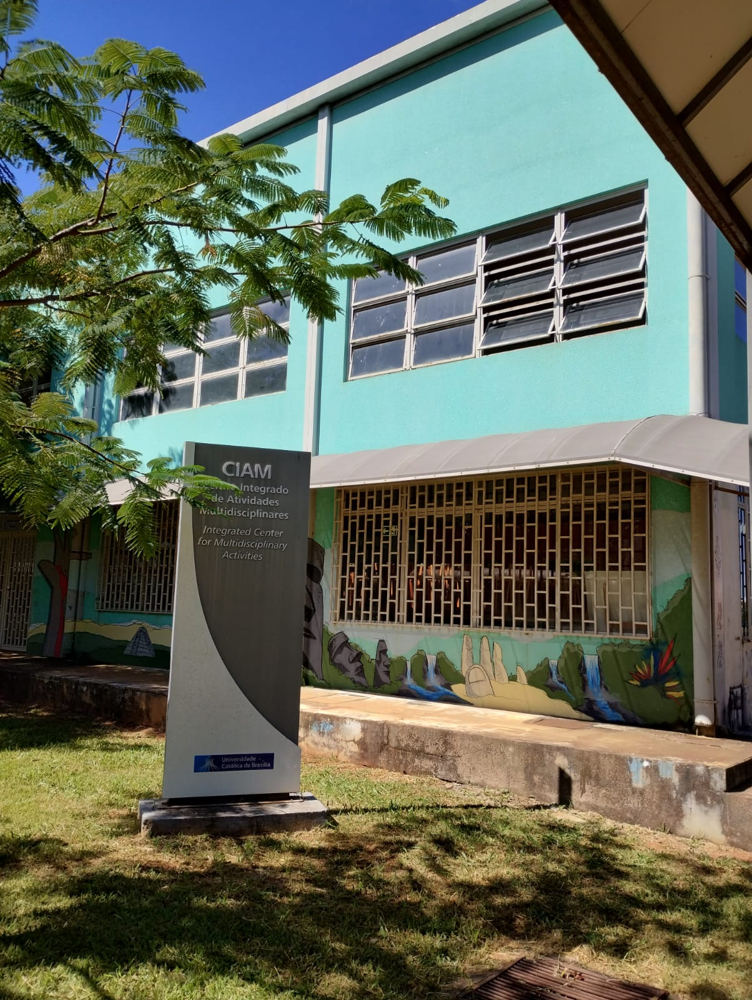

DESCRIÇÃO
O CIA oferece atendimento ambulatorial e atividades práticas em diversas especialidades médicas, realizadas por estudantes de Medicina sob supervisão de professores especializados. Entre os serviços, destacam-se:
- Ambulatório: Consultas em especialidades como Cardiologia, Clínica Médica, Dermatologia, Ginecologia, entre outras. Inclui campanhas educativas e mutirões;
- Laboratório de Habilidades e Simulação (LHS-UCB): Espaço de ensino transdisciplinar, com simulações realistas e desenvolvimento de competências técnicas e não técnicas;
- Laboratório de Análises Clínicas: Realização de exames laboratoriais e estágios supervisionados para estudantes de Biomedicina e Farmácia;
Para agendamentos e informações, utilize os canais:
- WhatsApp: (61) 99167-9431 / (61) 98625-7583
- Telefones: (61) 3356-9107 / (61) 3356-9108